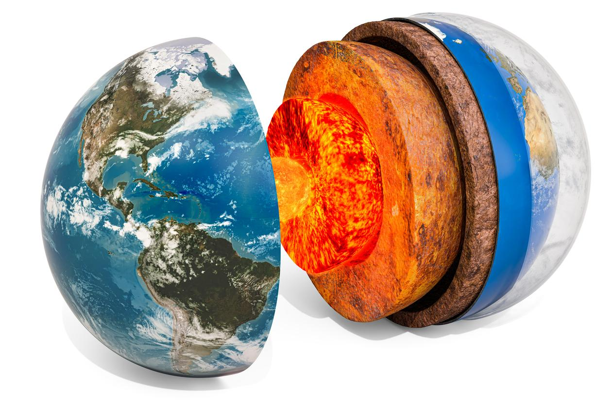
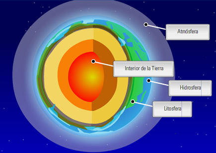
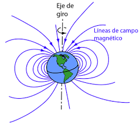

Para entrar un poco en contexto, la tierra se formó aproximadamente hace 4,450 millones de años a partir de la nebulosa protosolar, junto con el Sol y los demás planetas del Sistema Solar (Colebrook Michael, 2006). Ocupa el cuarto lugar en tamaño de los planetas del sistema solar y es el tercero en orden con distancia respecto al sol.
Los rasgos mas sobresalientes de la tierra son los siguientes
Es el unico lugar del universo donde se ha confirmado que existe vida
Ha evolucionado gracias a procesos geologicos y biologicos

Su superficie externa se divide en litósfera e hidrósfera, donde la litósfera se forma por una serie de placas que se desplazan en el manto terrestre y se sitúan principalmente en el hemisferio norte. La hidrósfera está conformada principalmente por los océanos. Hay otras capas de la tierra que se pueden ver en la imagen.

Su interior permanece activo, con una gruesa capa de materiales fundidos y un núcleo rico en hierro que genera un campo magnético.

RECURSOS
Permanentes
Los recursos permanentes son inagotables en la escala de tiempo humano, aunque puede haber variación en la distribución especial y temporal del recurso (que puede ser energía solar, vientos, mareas y suelos)
No renovables
Los recursos agotables o no renovables por otra parte existen en una cantidad finite. Si no se usan de manera racional y eficiente se agotarán, ya que no se forman en la naturaleza de manera tan usual como para ser explotadas por el humano.
Renovables
Los recursos renovables son aquellos que se generan y conservan por medio de procesos bioquímicos que se producen en diferentes ciclos de la vida como el oxígeno, el agua, carbono, nitrógeno y los seres vivos (plantas y animales).